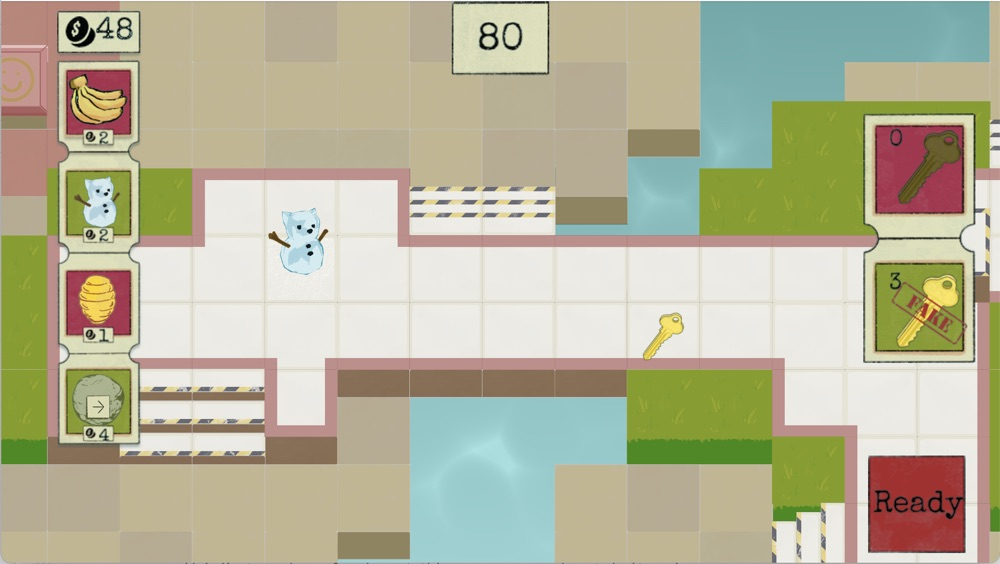

bmneuwirth@gmail.com
linkedin.com/in/benneuwirth
B.A. Computer Science, summa cum laude
Cornell University, 2025
I work on the vehicle software team on the 3D park scene, self-driving visualization, and 2D UI, in C++, Qt, Godot, and Unreal Engine. A lot of the job is making a real-time renderer behave on an automotive infotainment computer running Linux — profiling and cutting rendering, memory, and CPU cost until it fits.
I led the implementation of TRON Mode on a rapid timeline, shipping it in both Godot and Unreal Engine across five vehicle models. It has been used millions of times. Beyond the visualization itself, I integrated it with the lightbar, turn signals, the intro video, and the music.
I implemented the custom wrap feature, which lets owners change how their car looks in the vehicle's visualization and upload their own wraps over USB or from the mobile app. Also used millions of times.
I implemented 3D UI in Unreal Engine for the Cybercab Robotaxi experience, including the rider ingress and egress screens.
I worked on the initial bring-up of the Unreal Engine visualization for Model 3 and Model Y, porting features over from Godot — scene markers, camera views — and adding per-vehicle skybox and lighting support for designers to tune.

A 1v1 networked action-strategy game for mobile, built for Cornell's advanced game development class. It runs in two phases: first you place traps to stop your opponent from reaching the key and the exit, then you run for the exit yourself while dodging their traps and setting off your own.
I was Programming Lead for the seven programmers on the team — I designed the system architecture and led code review — and implemented the perspective camera, movement, collision for a pseudo-3D perspective with multiple heights, and the touchscreen UX for trap placement.


An action platformer about flipping gravity and spitting gum. You play a space rogue out to bring down a robot regime, using gum and gravity in unison to infiltrate spaceships, steal their power sources, and get out before everything blows up. Built with a team of eight for Cornell's intro game development class and released on Steam.
I contributed heavily to the concept and level design, and programmed the dynamic scrolling camera, gum and enemy mechanics, blocks and doors, player controls, Box2D lights integration, and Tiled level editor integration.